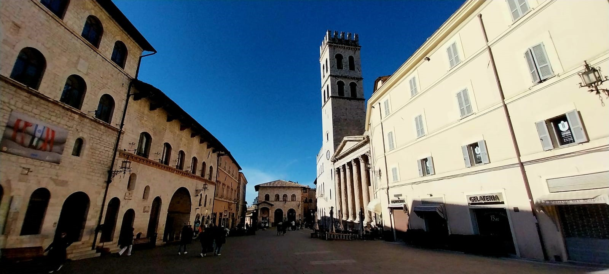
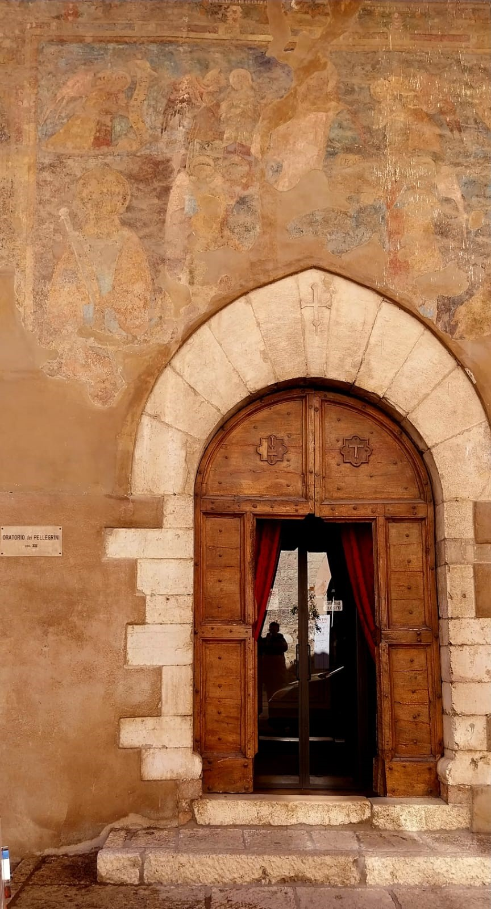

Historiadora del Arte | Guía Oficial
Explora el Alma de Umbría





Análisis del arte etrusco y renacentista en el corazón de la ciudad.
Un viaje por la Basílica para entender la revolución de la pintura moderna.
Découvrez les secrets des Étrusques et la grandeur de la Renaissance.
Une analyse approfondie des fresques de Giotto et de l'histoire franciscaine.
Percorsi critici attraverso i monumenti iconici del capoluogo umbro.
Un'esperienza immersiva nel cuore artistico e spirituale della città rosa.